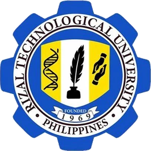
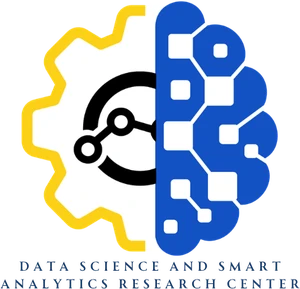

Rizal Technological University invites you to share your insights on eleven proposed academic programs. We want to know how well these programs answer the changing needs of industry, of our communities, and of the careers our students hope to build.
Taking part is simple. For each program, tell us whether it responds to a real need and whether you or someone you know would enroll. Rate one, several, or all eleven. Every response counts.
Together, let's create learning opportunities that are relevant, inclusive, innovative, and responsive to the aspirations of our communities. Be part of shaping RTU's future and take the poll today! 💙💛
Your insights will help RTU plan programs that answer the needs of industry, our communities, and future careers. Please share this poll with classmates, colleagues, and your community.